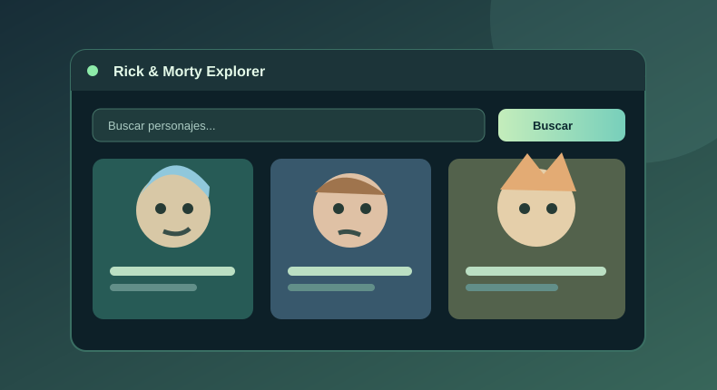
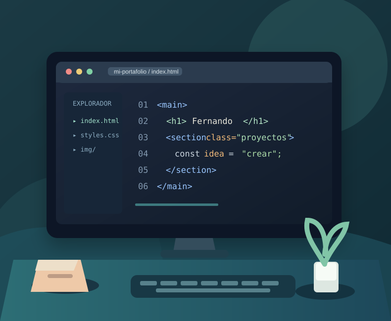
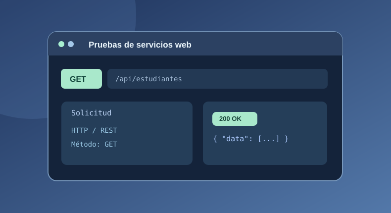

PROYECTO WEB · 2026
Rick & Morty Explorer
Portal que consulta una API pública para mostrar personajes y permitir búsquedas y filtros por nombre, género y estado.
Ver código en GitHubESTUDIANTE DE INGENIERÍA DE SISTEMAS
Me interesa el desarrollo web y aprender a convertir ideas en soluciones digitales que sean útiles y fáciles de utilizar.
Estudio en la Universidad Nacional de Ingeniería, en Managua, Nicaragua. Este sitio reúne un poco sobre mí y algunos trabajos que he realizado durante mi formación.

01 / SOBRE MÍ
Mi nombre es Fernando José Fonseca Carcache y soy estudiante de Ingeniería de Sistemas. Dentro de la carrera me han llamado la atención la programación, el diseño de páginas web y la forma en que los sistemas organizan la información.
En las prácticas de clase he trabajado con HTML, CSS, JavaScript y herramientas para consultar servicios web. Me gusta ir aprendiendo paso a paso, hacer pruebas y corregir lo que sea necesario hasta que un proyecto funcione como espero.
02 / HABILIDADES E INTERESES
Conocimientos que he puesto en práctica en mis clases y en pequeños proyectos.
Estructurar páginas con HTML, aplicar estilos con CSS y agregar funcionalidades con JavaScript.
HTML · CSS · JavaScriptConsultar información de servicios públicos, interpretar respuestas JSON y mostrar datos en una interfaz.
REST · JSON · fetch()Trabajar con Visual Studio Code y llevar un historial de los cambios realizados con Git y GitHub.
VS Code · Git · GitHub03 / TRABAJOS DE CLASE
Una muestra de actividades que me han ayudado a aplicar lo aprendido.

Portal que consulta una API pública para mostrar personajes y permitir búsquedas y filtros por nombre, género y estado.
Ver código en GitHub
Ejercicios con Strapi y Bruno para consultar recursos y comprobar respuestas de una API REST mediante distintos métodos HTTP.
Práctica realizada en clase de Diseño de Sistemas en Internet.
04 / CONTACTO Y ENLACES
En estos enlaces se puede consultar mi trabajo académico y encontrar recursos que utilizo para aprender.